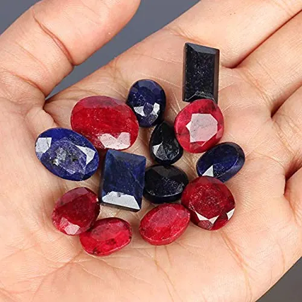

紅寶石產地：緬甸、莫三比克與泰國的基因
紅寶石的「產地」不是標籤，是地質基因——鉻、鐵與內含物的配方，讓每座礦山都長出自己的紅。

核心定義
紅寶石的產地決定它的「基因」：鉻鐵比例、內含物種類與微量元素配方，因礦床地質而異。全球主要產地包括緬甸莫谷（Mogok）、莫三比克（Montepuez 等）、泰國（占他武里）、越南、阿富汗、坦尚尼亞、馬達加斯加等。
產地對價格的影響巨大：緬甸莫谷紅寶是市場傳奇，單克拉價可高於其他產地同品質的數倍；莫三比克近年崛起，成為高品質紅寶的主力供應；泰國紅寶則以顏色偏深、鐵含量高著稱。
特徵與分類
| 產地 | 顏色氣質 | 內含物特徵 | 市場地位 |
|---|---|---|---|
| 緬甸莫谷 | 鮮紅、絲絨感、強螢光 | 水鋁礦針、金紅石絲、方解石 | 傳奇頂級 |
| 莫三比克 | 濃豔紅、近鴿血 | 針狀金紅石、雲狀 | 當代主力 |
| 泰國 | 深紅偏暗、鐵多 | 燒結暈環、熔融包裹體 | 大宗平價 |
| 越南 | 紫紅、粉紅 | 裂隙多、白雲石 | 中低價位 |
緬甸紅寶的「絲絨感」與強螢光，是它身價的核心；莫三比克紅寶則以「高飽和紅＋相對乾淨」打天下，近年連 GIA 都常給莫三比克頂級紅寶 pigeon blood 評語。
科學原理
鉻與鐵是產地科學的主角：緬甸紅寶鐵低鉻高→螢光強、顏色鮮豔；泰國紅寶鐵高→螢光被抑制、顏色偏暗；莫三比克紅寶介於兩者之間，螢光中等、飽和度高。內含物組合（方解石、水鋁礦、金紅石）則像指紋，鑑定師靠它們推斷產地。
「含鉻的方解石＋金紅石針＋強螢光」幾乎是莫谷紅寶的標準配置；莫三比克則常見金紅石針與雲狀內含物。實驗室的產地鑑定（如 SSEF、Gübelin）就是用這些「指紋」交叉比對。
鑑定與鑑別方法
- 顯微鏡記錄內含物組合（方解石、水鋁礦、金紅石針等）
- 測螢光強度與顏色（緬甸紅寶常強紅螢光）
- 用 LA-ICP-MS 等微量元素分析（實驗室層級）
- 比對權威實驗室的產地報告
- 注意：合成紅寶的內含物完全不同，先排除合成
市場行情與保養建議
行情差異：緬甸莫谷紅寶有「產地溢價」，同品質可高出他地數倍；莫三比克紅寶性價比高，是近年婚戒與收藏的主流；泰國紅寶大宗平價，適合預算型買家。產地溢價是否值得，看你的收藏敘事。
重要提醒：產地鑑定是「實驗室判斷」不是「絕對真理」，不同機構對同一顆寶石的產地意見可能分歧。高價交易務必指定權威實驗室（GIA/SSEF/Gübelin）出產地證書。
常見誤區
產地是統計優勢，不是個體保證。頂級莫三比克紅寶的品質可能勝過一般緬甸紅寶——而且緬甸產地溢價高，性價比要算清楚。
緬甸紅寶的市場溢價高，誤稱與偽稱層出不窮。沒有權威實驗室的產地證書，商人口中的「緬甸」只是敘事。
冷知識
緬甸莫谷的礦區傳說是「每一鋤頭下去都有寶石」，數百年來產出無數傳奇紅寶與藍寶，被稱為寶石世界的聖地。
莫三比克北部的紅寶礦 2009 年後才大規模開採，短短十多年就成為全球高品質紅寶的最大來源——改變了整個紅寶市場的版圖。
反直覺觀點
莫三比克紅寶供應充足、品質穩定、價格透明——對多數買家，它比緬甸紅寶「好買」得多。產地神話與實際需求，常是兩條線。
讓它鮮豔柔和的絲絨感，來自密集的細針內含物散射——在純淨度思維下這是「不乾淨」，但在緬甸紅寶美學裡，這層絨光是靈魂。